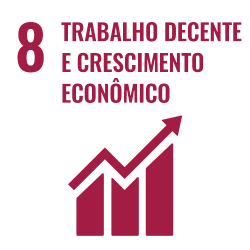

8. Trabalho de decente e crescimento econômico -
Promover o crescimento econômico sustentado, inclusivo e sustentável, emprego pleno e produtivo, e trabalho decente para todos
Introdução - Vídeo Geral ODS

Um Curto Vídeo explicando de forma geral o que é ODS.
ANÁLISE
EXPLICANDO
Os vídeos acima abordam a ODS 8, que é a Oitava Meta de Desenvolvimento Sustentável da Agenda 2030 das Nações Unidas.
ENTREGÁVEL
REFERÊNCIAS
IBGE, Bonita Move, negóciosocial
Vídeo Geral
Análise Autoral
Explicando O ODS 8
entregável De PP
Referências
Voltar
Próximo